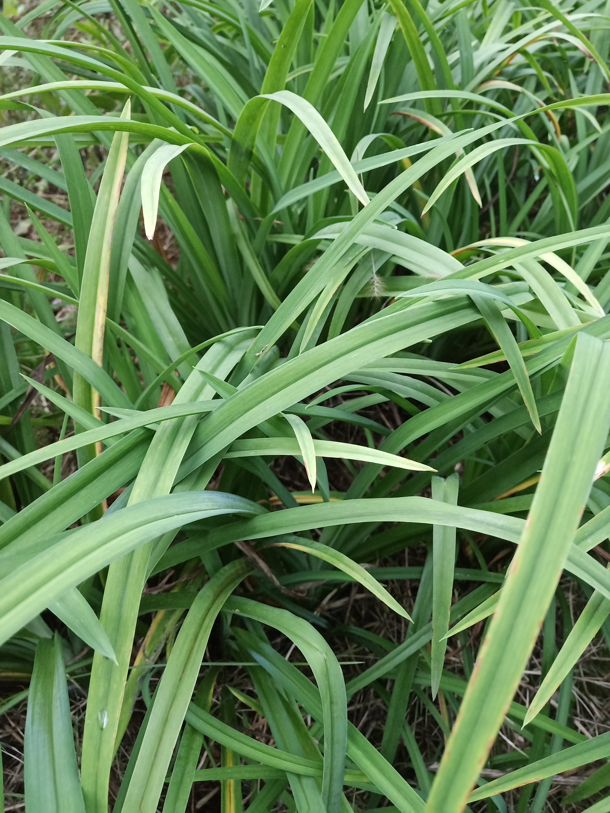
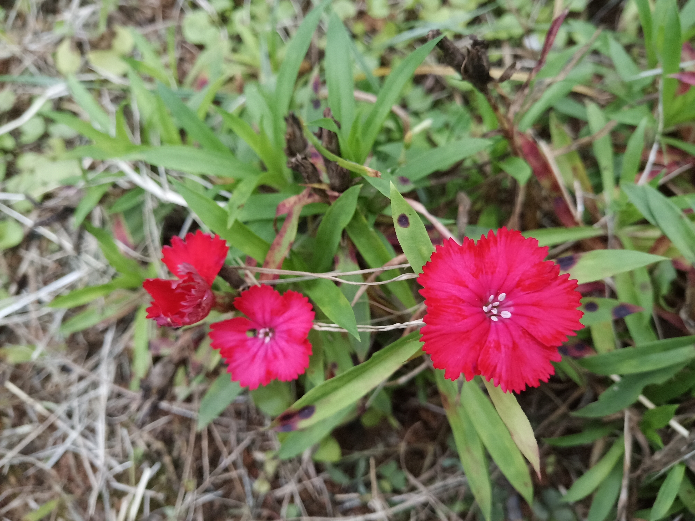

|
酢浆草，（学名：Oxalis corniculata L.）别名酸浆草、酸酸草、斑鸠酸、三叶酸、酸咪咪、钩钩草：多年生草本植物，花、果期2-9月。 观赏价值：酢浆草为酢浆草科多年生草本植物，丛生，高15至20厘米，春夏秋不间断开花，以春秋凉爽时间花开最盛。由于酢浆草低矮，生长快，开花时间长，花开时节十分壮观，在园林绿化中应用较多。 |
萱草（学名：Hemerocallis fulva），是百合科萱草属的一种多年生宿根草本。具短根状茎和粗壮的纺锤形肉质根。萱草别名众多，有“金针”、“忘忧草”、“宜男草”、“疗愁”、“鹿箭”等名，英文中称萱草为“虎百合”（Tiger Lily，这也是卷丹的英文名）。当食用时，多被称为“金针”（golden needle）。 观赏价值：花色鲜艳，栽培容易，且春季萌发早，绿叶成丛极为美观。园林中多丛植或于花境、路旁栽植。萱草类耐半荫，又可做疏林地被植物。 植物文化：中国母亲花 早在康乃馨成为母爱的象征之前，我国也有一种母亲之花，它就是萱草花。 |
 |
|
金鸡菊（学名：Coreopsis basalis [1] ）别 称 小波斯菊、金钱菊、孔雀菊。是菊科，金鸡菊属一年生或二年生草本植物， 7-9月开花。 原产北美洲。各地公园、庭院常见栽培。观赏草花。耐寒耐旱，对土壤要求不严，喜光，但耐半阴，适应性强，对二氧化硫有较强的抗性。栽培容易，常能自行繁衍。生产中多采用播种或分株繁殖，夏季也可进行扦插繁殖。 |
石竹，别名：兴安石竹、北石竹、钻叶石竹、蒙古石竹、丝叶石竹、高山石竹、 辽东石竹、长萼石竹、长苞石竹、林生石竹、三脉石竹，瞿麦草，拉丁文名：Dianthus chinensis L. 为双子叶植物纲、石竹科、石竹属多年生草本花期5-6月，果期7-9月。 观赏价值：石竹已广泛栽培。育出许多品种，是很好的观赏花卉。 石竹株型低矮，茎秆似竹，叶丛青翠，自然花期5~9月，从暮春季节可开至仲秋，温室盆栽可以花开四季。花顶生枝端，单生或成对，也有呈圆锥状聚伞花序；花径不大，仅2至3厘米，但花朵繁茂，此起彼伏，观赏期较长。花色有白、粉、红、粉红、大红、紫、淡紫、黄、蓝等，五彩缤纷，变化万端。 园林中可用于花坛、花境、花台或盆栽，也可用于岩石园和草坪边缘点缀。大面积成片栽植时可作景观地被材料，另外石竹有吸收二氧化硫和氯气的本领，凡有毒气的地方可以多种。切花观赏亦佳。 |
 |
|
绵毛水苏 拉丁学名Stachys lanata Jacq. 别称棉毛水苏年生草本，花果期花期7月。 观赏价值：花境，岩石园，庭园观赏。我国常将绵毛水苏作为观赏植物栽培于花圃中。 |


计算机11803 1804240605 何姗姗